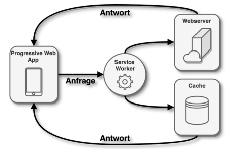
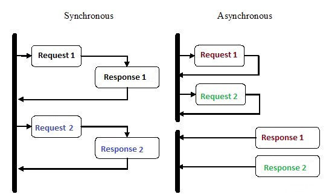

Vorlesung 6
Apps!!!
In dieser letzten Lektion haben wir uns mit Anwendungen beschäftigt. Vor 2007 bezog sich dieser Begriff auf dynamische browserbasierte Webanwendungen. Seit 2007 werden native Anwendungen verwendet. Auf Android laufen diese auf Java und auf iOS seit 2014 auf Swift.
Das Problem bei nativen Anwendungen ist, dass sie sehr komplex und plattformspezifisch sind. Seit 2010 werden auch hybride Anwendungen eingesetzt. Dies ist ein Framework für die Entwicklung einer Anwendung, die auf iOS und Android funktioniert. Auch hybride Anwendungen sind komplex. Außerdem haben sie das Problem, dass sie nur für Mobiltelefone geeignet sind und daher eine zusätzliche Desktop-Webanwendung erforderlich sein kann.
Die neueste Form der App wurde 2015 entwickelt und wird als progressive Web-App bezeichnet. Im Grunde handelt es sich um eine Website die aussieht wie eine native App und auch über fast alle Funktionen einer App verfügt. Beispiele für solche Anwendungen sind die Websites von Facebook und Netflix.
Progressive Webanwendungen:
Progressive Webanwendungen funktionieren mit Hilfe von JavaScript-Code, der im Hintergrund läuft. Ein Proxy kümmert sich um die Kommunikation zwischen der PWA und dem Webserver.

Die Web-App verfügt über einen eigenen Cache und kann somit bei jeder eingehenden Anfrage einer PWA entscheiden, ob diese aus dem Cache beantwortet werden kann oder ob eine aktive Internetverbindung erforderlich ist. Darüber hinaus werden Push-Benachrichtigungen, Offline-Nutzung und Hintergrundaktualisierungen ermöglicht.Innerhalb von Progressiven Web Apps wird noch in Single und Multi Page Application unterschieden. Single Page Applications bestehen aus einer HTML Seite und rendern ihren Content direkt über JavaScript. Bei Multi Page Applications handelt es sich um mehrere HTML Seiten, die vom Server gerendert werden.

React ist eine JavaScript-Softwarebibliothek, die ein Grundgerüst für die Ausgabe von User-Interface-Komponenten von Webseiten zur Verfügung stellt. Komponenten werden in React hierarchisch aufgebaut und können in dessen Syntax als selbst definierte JSX-Tags repräsentiert werden. Für React Apps werden zusätzliche Libraries benötigt, wie Redux oder React Router. React basiert auf Komponenten, z.B.:
- Header
- Sidebar
- Headline
- Content
Node.js:
Bei Node.js handelt es sich um eine Laufzeitumgebung für JavaScript. Mit Hilfe von Node.js kann JavaScript auf jeder Plattform und ohne Browser laufen. Zudem kann damit JavaScript zur serverseitigen Programmierung eingesetzt werden.
Express.js
Express.js ist ein Node.js-Framework von Webanwendungen, das zahlreiche leistungsfähige Features und Funktionen für Webanwendungen und mobile Anwendungen bereitstellt. Mithilfe unzähliger HTTP-Dienstprogrammmethoden und Middlewarefunktionen gestaltet sich das Erstellen einer leistungsfähigen API schnell und einfach. Express bietet eine Thin-Layer-Ebene mit grundlegenden Webanwendungsfunktionen, ohne die bekannten Node.js-Features zu überlagern

Im Anschluss haben wir uns mit JavaScript beschäftigt. Hier eine Übersicht der wichtigsten Grundbegriffe und Befehle die wir auch schon aus anderen Programmiersprachen kennen:
| Datentypen: | |
|---|---|
| Name | Inhalt |
| Number | Ganz-/Fließkommazahlen |
| Strings | Texte |
| Boolean | True & False Statements |
| Array | Variablen, die mehrere Werte speichern |
| Objekte | Speichern Daten und Eigenschaften |
| NULL | Variable ohne Wert |
| Undefined | Variable ohne zugewiesenen Wert |
| Operatoren | |
|---|---|
| Name | Formel |
| Addition | var x = 3+4; |
| Subtraktion | var x = 5-2; |
| Multiplikation | var x = 2*3; |
| Division | var x = 6/2; |
| Modulo | var x = 7%2; |
| Wertevergleich | a == b; |
| Werte- und Typvergleich | a === b; |
| Ungleicher Wert | a!=b; |
| Ungleicher Wert und Typ | a !== b; |
| Größer bzw Größer-gleich | a>b bzw. a>=b |
| Kleiner bzw Kleiner-gleich | a |
| Ternary | a?b |
| Variablen: | |
|---|---|
| Var: | Meistgenutzte Varibale; kann neu zugewiesen, aber nur innerhalb einer Funktion aufgerufen werden; mit var definierte Variablen werden bei der Ausführung des Codes an den Anfang gestellt. |
| Const: | Kann nicht neu zugewiesen werden und sind nicht zugänglich, bevor sie im Code erscheinen |
| Let: | Vergleichbar mit const, können jedoch neu zugewiesen, aber nicht neu deklariert werden |
Objekte:
Objekte sind Behälter für logisch zusammen gehörende Variablen und Funktionen, die als Eigenschaften und Methoden des Objekts bezeichnet werden. Ein Javascript Object organisiert Daten, kapselt Daten und Logik nach außen ab und bietet eine einfache Schnittstelle zu seinen Elementen über seinen Namen.Bedingungen:
Bedingungen in Programmiersprachen erlauben es, bestimmte Fälle abzuprüfen, z. B. ob eine Variable einen bestimmten Wert hat. JavaScript bietet, wie in vielen anderen Sprachen auch, zwei Möglichkeiten: if (einfache Verzweigung) und switch - case (mehrfache Verzweigung).Funktionen:
Funktionen sind ein Grundbaustein in JavaScript. Eine Funktion ist eine Prozedur - eine Reihe von Anweisungen, um eine Aufgabe auszuführen oder eine Wert auszurechnen. Um Funktionen zu verwenden, müssen diese im Scope (Gültigkeitsbereich) deklariert werden, in dem sie ausgeführt werden soll.Pure Functions:
Funktionen, die einen Wert zurückliefern, der nur aus den Parametern entsteht.Higher-Order-Functions - HOC:
Funktionen, welche andere Funktionen verändern können.Klassen:
Eine JavaScript-Klasse ist eine Art von Funktion. Klassen werden mit dem Schlüsselwort class deklariert. Wir werden die Syntax von Funktionsausdrücken verwenden, um eine Funktion zu initialisieren, und die Syntax von Klassenausdrücken, um eine Klasse zu initialisieren.Bind:
Sollen Klassenfunktionen weitergegeben werden, muss bei der normalen Deklaration von Funktionen vor der Übergabe ein bind ausgeführt werden. bind wird bei der Verwendung von Pfeilfunktionen in Klassen nicht benötigt, da für diese Funktionen automatisch ein bind ausgeführt wird. bind sorgt dafür, das Funktionen this verwenden können.Object Destructuring:
Wird genutzt, um einzelne Werte und Eigenschaften von Arrays oder Objekten herauszulösen.Object Literal Enhancement:
Gegenstück zum Destructuring. Es wird ein Objekt wieder zusammengesetzt.Spread Operator:
Zwei Arrays können in ein Drittes kombiniert werden. Der Spread Operator erzeugt dafür eine lokale Kopie, sodass die originalen Daten nicht beeinflusst werden.Asynchrone Programmierung:
Die Programme, die wir bisher angesehen haben den Prozessor beschäftigt, bis die zu erledigende Arbeit abgeschlossen ist. Viele Programme nutzen jedoch auch Dinge außerhalb des Prozessors ausführen, indem sie etwa über ein Netzwerk kommunizieren oder Daten von einer Festplatte anfordern. In solchen Fällen soll der Prozessor nicht einfach im Leerlauf gelassen werden.

In einem synchronen Programmiermodell geschieht immer eins nach dem anderen. Solange also eine Aktion läuft kann das Programm nicht weitermachen. Beim asynchronen Modell können im Gegensatz dazu mehrere Dinge gleichzeitig geschehen. Bei Beginn einer Aktion kann das Programm parallel mit etwas anderem weitermachen. Sobald die Aktion abgeschlossen ist, wird das Programm darüber informiert und erhält Zugriff auf das Ergebnis.
Möchte man nun zwei Ressourcen aus dem Netzwerk abrufen und die Ergebnisse kombinieren, funktioniert dies in einer synchronen Umgebung, indem man eine Anforderung nach der anderen ausführt. Dabei kann die zweite Anforderung erst dann gestartet werden, wenn die erste abgeschlossen ist. Die erforderliche Zeit beträgt dann mindestens die Summe der beiden Antwortzeiten. In einem synchronen System werden zusätzliche Threads verwendet.Dabei kann jeweils auf einem Prozessor ein eigener Thread ausgeführt werden. Im zweiten Thread kann bereits die zweite Anforderung begonnen werden. Beide Threads warten dann auf den Eingang der Ergebnisse. Anschließend werden sie resynchronisiert, um ihre Ergebnisse zu kombinieren. Im Diagramm sieht dies dann folgendermaßen aus:
Im synchronen Modell wird also implizit auf den Abschluss von Aktionen gewartet, im asynchronen dagegen explizit.
Promises:
Ein Promise ist eine asynchrone Aktion, die irgendwann abgeschlossen sein kann und dann einen Wert produziert. Sobald dieser zur Verfügung steht, kann das Promise jeden darüber benachrichtigen, der daran interessiert ist. Die einfachste Art einen solchen Promise zu erstellen, ist der Aufruf von Promise.resolve. Die Funktion schließt den Wert, der übergeben wird in ein Promise ein. Handelt es sich dabei bereits um ein Promise, wird es einfach zurückgegeben. Andernfalls erhölt man ein neues Promise, das sofort mit dem zurückgegebenen Wert als Ergebnis abgeschlosse wird.
Promise ist eine asynchrone Aktion, welche in der Zukunft abgeschlossen sein wird und ein Ergebnis zurückliefert. Promise kann jeden über das Ergebnis informieren, der daran interessiert ist.
Man kann sich ein Promise als ein Gerät vorstellen, das Werte in eine asynchrone Realität verschiebt. Ein normaler Wert ist einfach vorhanden. Ein versprochener Wert dagegen kann bereits vorhanden sein oder irgendwann in der Zukunft erscheinen. Berechnungen an in Promises eingeschlossenen Werten werden asynchron ausgeführt, sobald die Werte zur Verfügung stehen.
Zum Erstellen eines Promises kann man Promise als Konstruktor verwenden. Dieser erwartet eine Funktion als Argument, die er sofort aufruft und an die er eine Funktionübergibt, die sie nutzen kann, um das Promise aufzulösen.